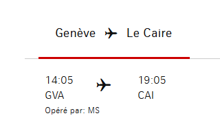

L'Égypte se situe à environ 3 000 km de Genève. Il n'existe pas de liaison
terrestre directe : l'avion est le moyen le plus simple et le plus rapide,
mais d'autres combinaisons existent selon le budget et le temps disponible.

Trajet schématique : Genève → Le Caire (environ 3 000 km)
Avion
Départ : aéroport de Genève (GVA)
Arrivée : Le Caire (CAI), ou Hurghada / Charm el-Cheikh en saison
Durée : environ 4 h 30 à 5 h en vol direct
Prix indicatif : 250 à 600 CHF l'aller-retour
Le plus rapide et le plus pratique. Avec une escale, le trajet est plus long mais parfois moins cher.
Train + avion
Départ : gare de Genève-Cornavin
Trajet : train vers Milan (environ 4 h), puis vol vers Le Caire
Durée totale : environ 9 à 11 h
Prix indicatif : 80 à 150 CHF de train, plus le vol
Plus écologique pour la première partie du voyage.
Car + avion
Départ : gare routière de Genève
Trajet : car vers Milan ou Lyon, puis vol vers l'Égypte
Durée du car : environ 4 à 6 h
Prix indicatif : 15 à 40 CHF pour le car
Le plus économique pour rejoindre un aéroport à bas prix.